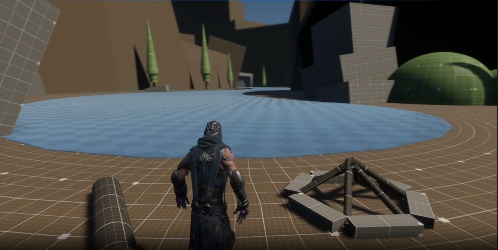
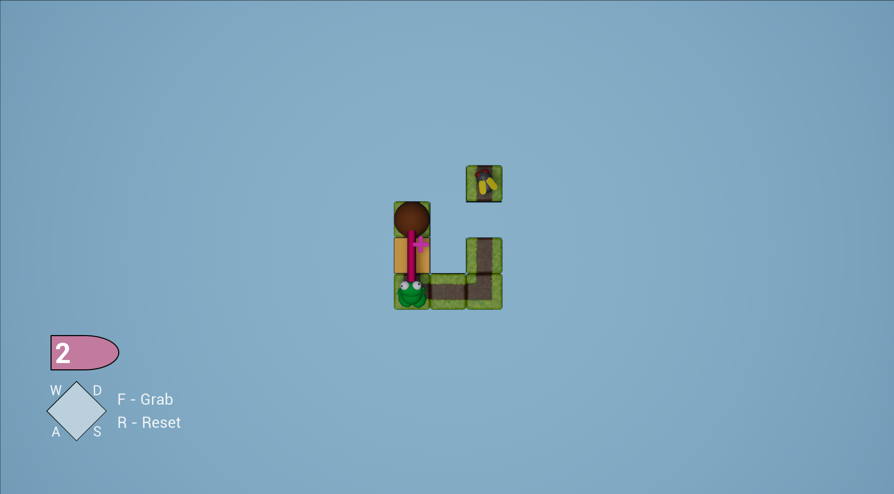
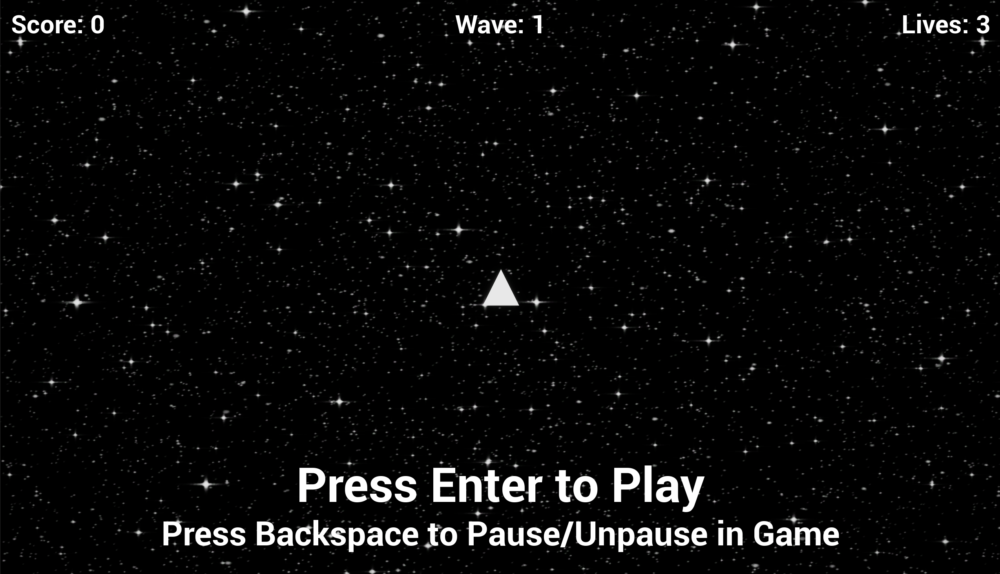

Projects
A collection of projects showcasing my experience in level design, gameplay mechanics, and interactive systems. Each project highlights my approach to designing engaging player experiences, solving gameplay challenges, and bringing ideas to life.
Level Design

Adventure Project — Foundational Level Design
An early level design project created as part of my game design studies, set in a medieval-inspired castle environment. Designed a linear player path while exploring foundational level design principles, including focal point placement, environmental composition, and visual guidance to lead players through the space. Focused on establishing a clear sense of direction, creating visual interest, and learning how environmental layout can guide the player's journey.
Game Mechanics

Tile Based Game — Mechanic Recreation & Iteration
Recreated and implemented gameplay mechanics for a tile based game as part of a game development project. Inspired by A Frog's Guide to Eating Flies, I developed a stretchy tongue mechanic that allowed the player to latch onto rocks to extend their reach and catch distant flies. For a second mechanic, I adapted a fellow student's kick ball system into a humorous projectile mechanic. Players could eat flies, produce and kick poop onto trigger boxes to activate mechanisms and unlock new paths. Focused on mechanic recreation, gameplay interaction, traversal, and adapting existing systems to support new gameplay objectives.

Asteroid Shooter — Triple Shot Power Up
Developed an asteroid style arcade game as an introductory game development project, following an instructor led tutorial to establish the core gameplay systems. Expanded on the original project by independently designing and implementing a triple shot beam power up, giving the player an enhanced firing pattern to improve combat against incoming asteroids. Focused on gameplay modification, power up implementation, and expanding an existing game system with a custom mechanic.